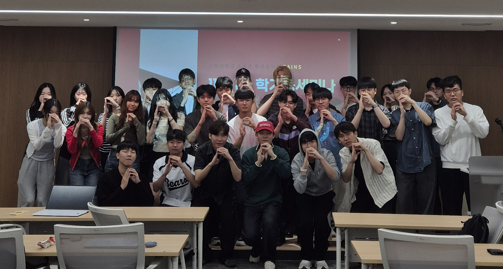
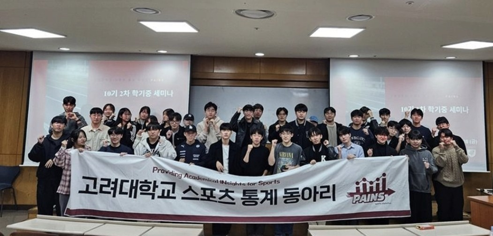
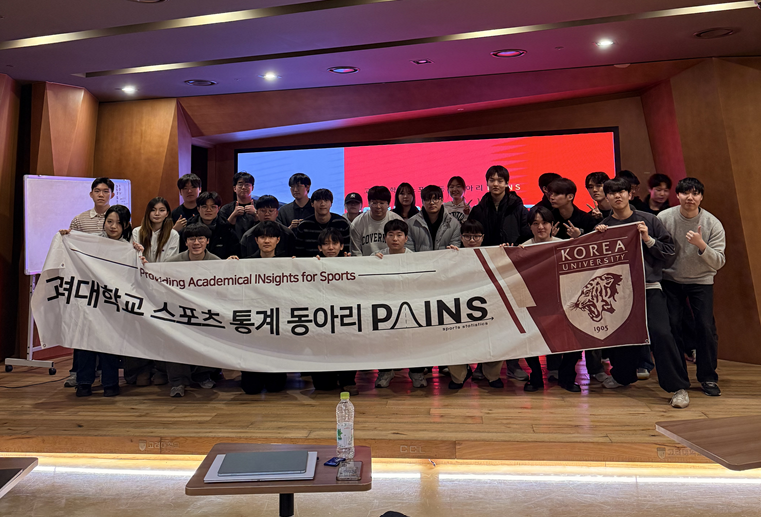
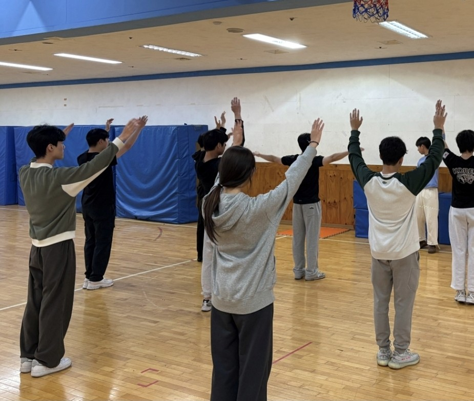

Korea University · Sports Analytics
SPORTSIN DATA.
우리는 스포츠의 모든 장면을 데이터로 기록하고,
분석하고, 다시 해석합니다.
01 / IDENTITY
PAINS Data Archive · Since 2020
WE TURN
SPORTS INTO
KNOWLEDGE.
경기에서 시작된 질문을 데이터로 검증하고, 동료와 나눈 분석을 하나의 프로젝트로 남깁니다.
167+PROJECTS
11THGENERATION
2020FOUNDED


03 / PROJECTS
질문에서 출발해
결과를 만듭니다.
야구, 축구, 농구, 배구, F1, e-sports까지. 분석의 결과를 포트폴리오로 남깁니다.
VIEW PROJECTS ↗04 / COMMUNITY
같이 보고,
같이 즐기고,
같이 성장합니다.
스포츠 경기 단체 관람, 연사초청, MT와 소모임을 통해 서로 다른 관심을 연결합니다.


PAINS ARCHIVE
167+ PROJECTSEXPLORE → NOTICEREAD → JOIN PAINSAPPLY →